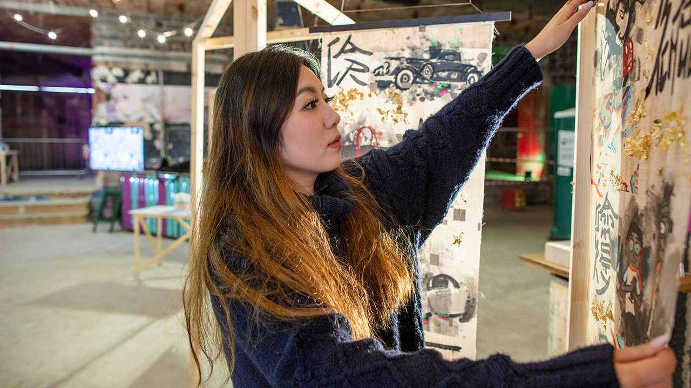

School of Art, Design and Architecture
Realise your artistic potential. Guided by practising artists, you’ll find the freedom to try different techniques and technologies. By analysing artistic influences and inspirations, you’ll deepen your understanding of what makes great art and gain the skills to create it. You’ll develop the expertise to feed your emotions and ideas into your work. And with excellent international links offering opportunities to travel, you’ll have everything you need to make your art the best it can be.
Graduates in fine art find employment in a diverse range of careers, from teaching to professional practice, working in museums to art therapy. We’ll help you find your niche and train for it with flexible internships.
| UCAS tariff | 104 |
| UCAS course code | W100 |
| Institution code | P60 |
| Duration | 3 years |
| Course type | Full-time |
| Location | Plymouth |
BA (Hons) Fine Art will equip you with a diverse range of transferable skills, including independent study, goal setting, workload and deadline management, critical and professional writing, problem-solving, spatial planning, resource management, complex project management and collaboration – skills that are key to contemporary, globalised, flexible working in many different sectors. You'll also graduate with a body of self-directed art practice that demonstrates critical, theoretical and contextual understandings of contemporary fine art.
Our mix of seminars and tutorials, placements and residencies, workshops and studio practice and your development of independent, collaborative and social practices will ready you to launch your professional practice, find employment in the cultural sector or act as a catalyst for further post-graduate study.
What can you do with a fine art degree?
Your first year is about exploration of materials, processes and ideas. You’ll examine the diverse traditions of fine art up to the present day. There’s ample studio time to try out different techniques and technologies from painting to digital media. Building critical analysis skills through interaction with other students and teaching staff will boost your confidence and you will be introduced to interdisciplinary art practices, working in response to the global challenges that we face today.
Fine Art Studio 1: Processes and Materials (ART418)
This introductory module introduces students to the diverse natures of fine art and the role of the studio within it. It aims to provide students with the skills to identify and investigate individual and collaborative interests and concerns through practical engagement in the studio and through interdisciplinary research; to develop students' capacities for self-criticism through informed debate; to develop student confidence in recognising and using processes and materials relevant to their developing practice; and to introduce practices of documentation. Lectures, seminars, and workshops support students to relate examples of contemporary fine art practice to their own, studio-based explorations of relevant concepts, material processes and techniques.
Interdisciplinary Approaches 1 (ART419)
This practice-based module introduces students to interdisciplinarity and to how artists have worked collaboratively in multi-disciplinary, interdisciplinary and transdisciplinary ways with researchers and communities. Students will learn a range of approaches and methods and will experiment with and test their artistic responses to themes that draw on interdisciplinary research.
Interdisciplinary Approaches 2 (ART420)
This practice-based module enables students to consolidate their awareness of ideas and approaches to interdisciplinarity and to how artists have worked collaboratively in multi-disciplinary, interdisciplinary and transdisciplinary ways with researchers and communities. Students will deepen their approaches and methods and will experiment with and test their artistic responses to a theme that draws on interdisciplinary work and develops out of Interdisciplinary Approaches 1.
Art Writing 1 (ART421)
This module focuses on exhibition visiting and creative review writing to introduce key ideas, methods, and approaches in fine art practice. Students will begin to develop skills in creative-critical writing through being introduced to examples and excerpts of art writing. Students will visit local and online exhibitions as part of this module and will produce a collection of short experiments in art writing.
Creative Reading 1 (ART422)
This module introduces key ideas, methods, and approaches within contemporary art practices through techniques of creative reading of critical texts. The focus is on concepts, methods and approaches that are current in contemporary art and are relevant to students’ emerging practices and will lead to a coherent expanded essay (choice of written, video, or audio) that evidences a sustained research process.
Drawing on your work from the first year, you’ll now have confidence to follow your instincts, choose your own media, use your inspirations and intentions to outline project aims and research strategies. You’ll further develop your critical skills by reflecting on your own work and that of others. In groups, you will curate a selection of work for a public exhibition and engage in a professional placement or interdisciplinary residency. You’ll also make work in response to common challenges – environment, health and equality. There is also an opportunity to take part in an international exchange programme.
Fine Art Practice 2: Studio Experimentation and DIY Culture (ART522)
This module provides an opportunity for students to develop a negotiated art practice through sustained studio experimentation and a DIY/DIWO (Do It Yourself / Do It With Others) culture, including strategies for navigating collaborative practices. The studio-based module will develop an awareness of contextual frameworks in relation to art practice and enable students to research and experiment with materials, processes, concepts and environments in preparation for a public show of art practice.
Common Challenge: Interdisciplinary Art Practice 4 (ART524)
This module provides an opportunity for students to develop and realise collaborative professional practice through interdisciplinary research grounded in placement and/or residency participation. There will be a specific focus on strategies for collaboration, community-based practice and social practice art. This will be introduced through a series of seminars and/or workshops. Students will work in groups with interdisciplinary partners to develop collaborative outputs that can be disseminated to a public audience.
ADA International Exchange
Critical studies 3: Close reading of influential text (ART520)
This programme of seminars, tutorials and independent study will examine key theories and ideas which relate to contemporary fine art practice through close reading of selected texts. The influential texts will be used to explore areas of artistic inquiry as well as strategies for researching, writing and engaging in practical research within a group and individual framework.
Critical studies 4: writing as cultural practice (ART521)
This programme of seminars, presentations, tutorials and independent study continues to explore key theories and ideas which relate to contemporary art practices. Selected works and texts, and modes of writing, will be used to explore areas of inquiry as methods of engaging in practical research within a group and individual framework.
In your final year, you will produce a comprehensive body of work, exploring its social and cultural context and the relationship between artist and audience. Deepen your knowledge of a specific area of artistic practice and its concepts through the common dissertation module, where you can develop critical and creative skills in an interdisciplinary setting. Continue to prepare for a career in art by developing a research portfolio and art publication for use when you graduate. Develop professional and transferable skills in collaborative arts administration and management through curation, design, marketing and installing your degree show.
Fine Art Practice 3: Research and Development for Public Exhibition (ART625)
The students will develop a negotiated conceptual framework for individual and/or collaborative creative methods, with reference to contemporary practices, approaches and theories. The module will enable the development of student learning towards an increasingly independent enquiry into source material and appropriate practices, linked to critical research and professional practice.
Fine Art Practice 4: Public Exhibition (ART626)
The students will realise a negotiated conceptual framework for individual and/or collaborative creative methods, with reference to contemporary practices, approaches and theories. The module will enable the development of student learning towards the realisation of an independent, practice-based enquiry into source material and appropriate professional practices, linked to critical research. This will be developed into a body of work for final presentation that is suitable for public exhibition.
Common Dissertation (ADA600)
The module engages students in situating practice through research, contextualisation and critical reflection, in relation to their final stage study and post University aspirations. Programmes can offer: a traditional dissertation; preparation for an extended dissertation; situating existing practice; or the construction of a new body of work as practice-based research.
Interdisciplinary Art Publication (ART627)
In this module students are encouraged to embrace a more open and flexible approach toward the interdisciplinary art publication. This module enables students to expand the possibilities of art publication through individual or the merging of art disciplines and in association with their studio practice.
Common Dissertation: Critical Practices (ADA600)
The module engages students in situating practice through research, contextualisation and critical reflection, in relation to their final stage study and post University aspirations. Programmes can offer: a traditional dissertation; preparation for an extended dissertation; situating existing practice; or the construction of a new body of work as practice-based research.
Fine Art Studio 3: Resolving Practice (ART625)
Students will develop a negotiated conceptual framework for individual and/or collaborative creative methods, with reference to contemporary practices, approaches and theories. The module will enable the development of student learning towards an increasingly independent enquiry into source material and appropriate practices, linked to critical research and professional practice. The focus will be on further development of research practices to ground and underpin student practice together with the development of detailed proposals and plans for work to be developed for exhibition at the end this module, which will be carried forward to the subsequent module in Semester 2.
Fine Art Studio 4: Going Public (ART626)
Students will realise a negotiated conceptual framework for an individual and/or collaborative artistic body of work, with reference to contemporary practices, approaches and theories. The module will enable students to realise independent, practice-based enquiries into source material and appropriate professional practices, linked to critical research. This will be developed into a body of work for final presentation that is suitable for public exhibition. The module also requires students to work together collaboratively to develop a Degree Show, drawing on the full range of professional skills required for the creative industries.
Art Publication (ART627)
In this studio module, students will develop an art publication that aligns with their current art practice and areas of research. The module questions what constitutes 'publication' - from artist books to 'zines to broadsheets to video essays to performance lectures – and explores the theoretical implications for contemporary art within a network of communication and circulation.
Every undergraduate taught course has a detailed programme specification document describing the course aims, the course structure, the teaching and learning methods, the learning outcomes and the rules of assessment.
The following programme specification represents the latest course structure and may be subject to change:
BA (Hons) Fine Art programme specification_0506
The modules shown for this course are those currently being studied by our students, or are proposed new modules. Please note that programme structures and individual modules are subject to amendment from time to time as part of the University’s curriculum enrichment programme and in line with changes in the University’s policies and requirements.
In light of the Coronavirus (COVID-19) pandemic, the changeable nature of the situation and any updates to government guidance, we may need to make further, last minute adjustments to how we deliver our teaching and learning on some or all of our programmes, at any time during the academic year. We want to reassure you that even if we do have to adjust the way in which we teach our programmes, we will be working to maintain the quality of the student learning experience and learning outcomes at all times.
UCAS tariff
96 - 144
A level
A minimum of two A levels; General Studies accepted.
International Baccalaureate
26 points.
18 Unit BTEC National Diploma/QCF Extended Diploma
DMM.
BTEC National Diploma modules
If you hold a BTEC qualification, it is vital that you provide our Admissions team with details of the exact modules you have studied as part of the BTEC. Without this information, we may be unable to process your application quickly and you could experience significant delays in the progress of your application to study with us. Please explicitly state the full list of modules within your qualification at the time of application.
All access courses
Pass a named Access to Higher Education Diploma (preferably Art and Design or combined) with at least 33 credits at merit and/or distinction.
T level
Merit in digital production, design and development.
GCSE
Mathematics and English Language grade C.
English language requirements
We welcome applicants with international qualifications. To view other accepted qualifications, please refer to our tariff glossary.
Equivalent qualifications may be considered; please contact admissions@plymouth.ac.uk.
A portfolio presentation is a requirement for entry onto this course.
Find further information on our portfolio guidance page.
| New Student | 2022-2023 | 2023-2024 |
|---|---|---|
| Home | £9,250 | £9,250 |
| International | £14,600 | £16,300 |
| Part time (Home) | £770 | £770 |
Full time fees shown are per annum. Part time fees shown are per 10 credits. Please note that fees are reviewed on an annual basis. Fees and the conditions that apply to them shown in the prospectus are correct at the time of going to print. Fees shown on the web are the most up to date but are still subject to change in exceptional circumstances. More information about fees and funding.
This course is delivered by the Faculty of Arts, Humanities and Business and more details of any additional costs associated with the faculty's courses are listed on the following page: Faculty of Arts, Humanities and Business additional costs.
All applications for undergraduate courses are made through UCAS (Universities and Colleges Admissions Service).
UCAS will ask for the information contained in the box at the top of this course page including the UCAS course code and the institution code.
To apply for this course and for more information about submitting an application including application deadline dates, please visit the UCAS website.
Support is also available to overseas students applying to the University from our International Office via our how to apply webpage or email admissions@plymouth.ac.uk.
Applicant portfolio advice – find out how to make an impression with your portfolio.